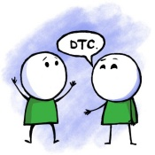

Data Engineering Zoomcamp: A Free 9-Week Course on Data Engineering Fundamentals
Master the fundamentals of data engineering by building an end-to-end data pipeline from scratch. Gain hands-on experience with industry-standard tools and best practices.

Syllabus Overview
The course consists of structured modules, hands-on workshops, and a final project to reinforce your learning.

Talk about data, machine
learning, and engineering
Attend weekly events
and learn from free courses
Ask career questions and
discuss career options
Prerequisites
To get the most out of this course, you should have:### **Modules** #### [Module 1: Containerization and Infrastructure as Code](01-docker-terraform/) - Introduction to GCP - Docker and Docker Compose - Running PostgreSQL with Docker - Infrastructure setup with Terraform - Homework #### [Module 2: Workflow Orchestration](02-workflow-orchestration/) - Data Lakes and Workflow Orchestration - Workflow orchestration with Kestra - Homework #### [Workshop 1: Data Ingestion](cohorts/2025/workshops/dlt/README.md) - API reading and pipeline scalability - Data normalization and incremental loading - Homework #### [Module 3: Data Warehousing](03-data-warehouse/) - Introduction to BigQuery - Partitioning, clustering, and best practices - Machine learning in BigQuery #### [Module 4: Analytics Engineering](04-analytics-engineering/) - dbt (data build tool) with PostgreSQL & BigQuery - Testing, documentation, and deployment - Data visualization with Metabase #### [Module 5: Batch Processing](05-batch/) - Introduction to Apache Spark - DataFrames and SQL - Internals of GroupBy and Joins #### [Module 6: Streaming](06-streaming/) - Introduction to Kafka - Kafka Streams and KSQL - Schema management with Avro #### [Final Project](projects/) - Apply all concepts learned in a real-world scenario - Peer review and feedback process
Data Engineering
This is a online course delivered on zoom for data engineering * [Module 1: Introduction](#module-1-introduction)* [Module 2: Containerization and Infrastructure as Code](#module-2-containerization-and-infrastructure-as-code)